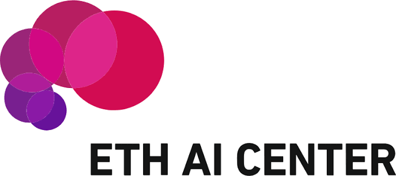

ACL 2026
Apertus

Democratizing open and compliant LLMs for global language environments.
Part of the SwissAI Initiative post-training team. Built online reinforcement learning infrastructure with VERL, developed curriculum learning for reasoning, and scaled experiments to 70B-parameter models on Ray clusters. Published at ACL 2026. Across the Apertus models on Hugging Face: 3.2M+ downloads all time.
Post-training
RL
VERL
vLLM
70B models
Read the paper